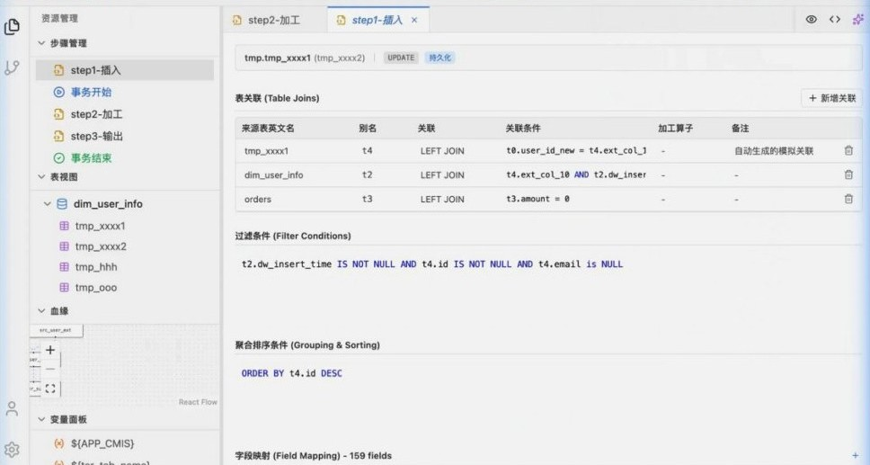
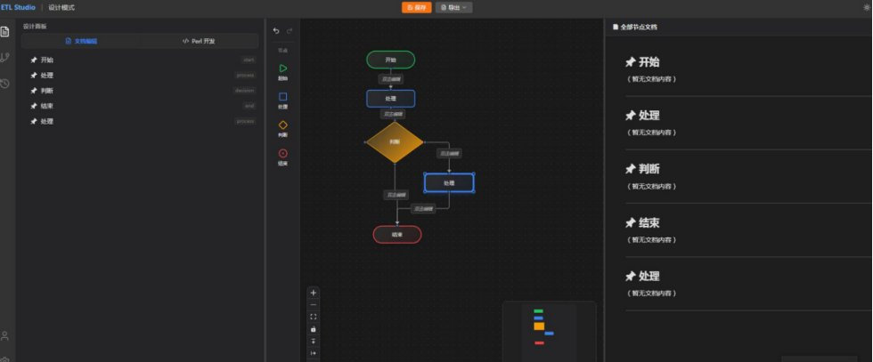
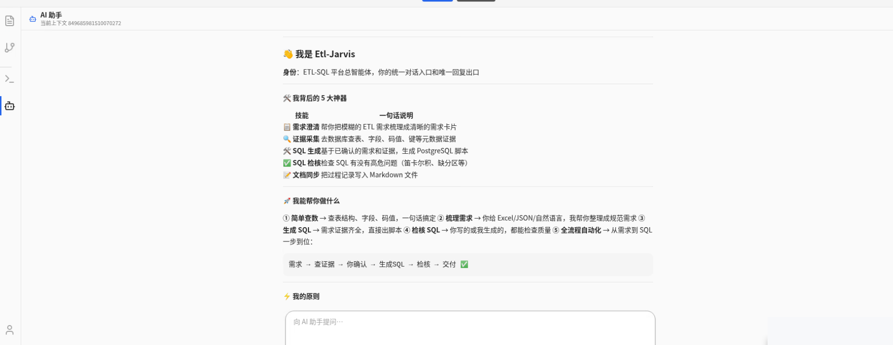
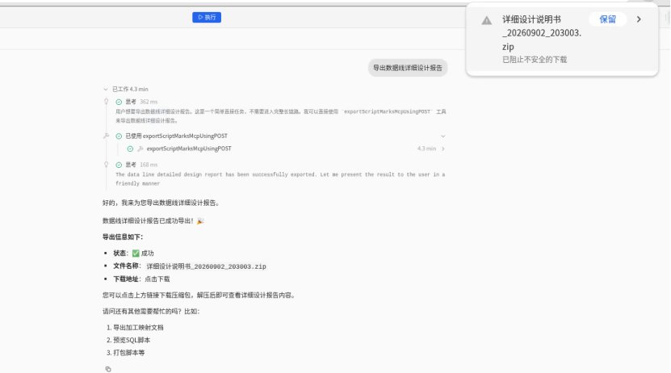
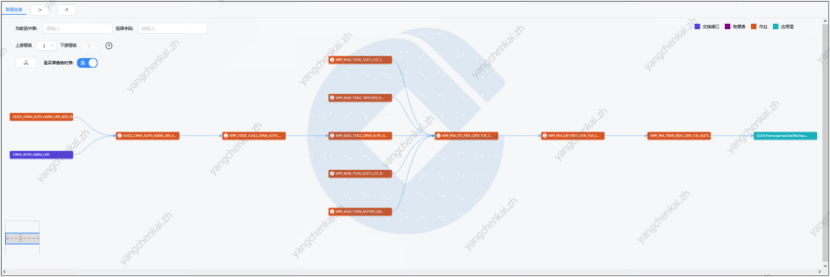
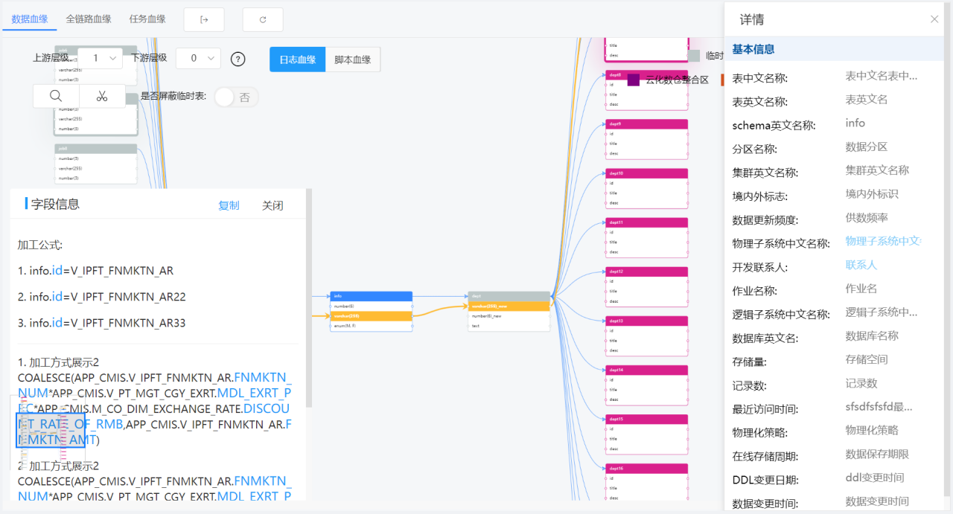
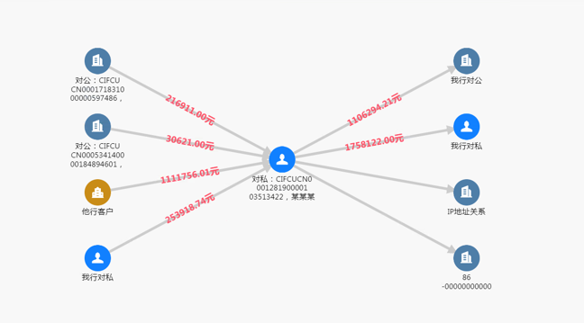
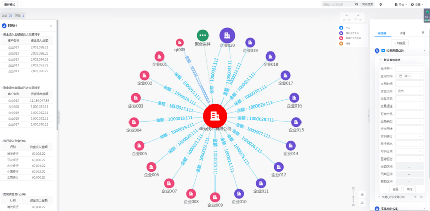
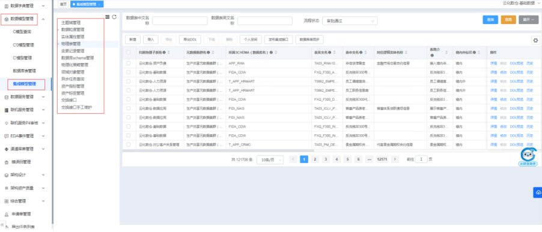

🧠
PORTFOLIO · SELECTED WORKS
作品集
数据可视化、AI 应用、研发平台与产品设计——我做过的一些东西。


ETL 在线设计平台
面向数据研发的一站式 Web IDE：映射设计、流程编排、SQL 预览与 Git 版本管理，浅色与深色双主题。
界面演示

AI 数据研发 Copilot
平台内置 AI 助手「Etl-Jarvis」：需求澄清、证据采集、SQL 生成、检核与文档同步，支持一键导出数据线详细设计报告。
已投产 · 界面演示

数据血缘平台
脚本血缘解析与全链路血缘视图：数据血缘、全链路血缘、任务血缘三种视图，支持字段级加工公式追溯。
界面演示

知识图谱 · 图平台
资金流向与股权关系的图谱构建与可视化查询：K 层展开、路径分析、图模式查询与图算法应用。
平台功能演示
模型设计平台
数据仓库建模管理平台：数据仓库管理、口径编辑器、维度建模与模型设计全流程支撑。
界面演示⏳
更多项目
AI 应用探索、研发平台重构、数据可视化大屏——持续补充中。
敬请期待